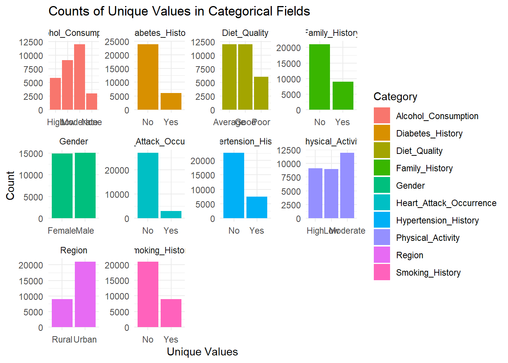
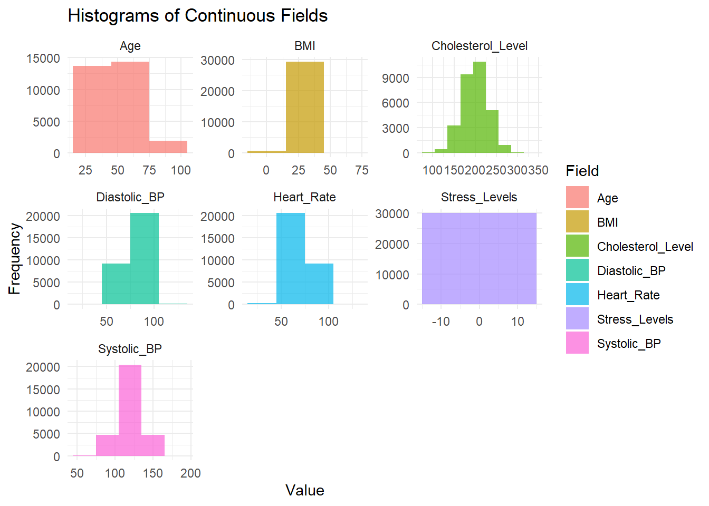
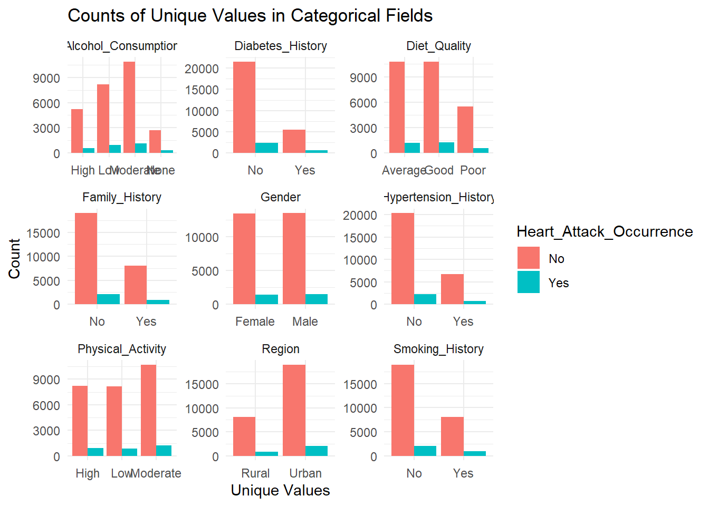

pacman::p_load(ggdist, ggridges, ggthemes,
colorspace, tidyverse, gridExtra)Take-Home Exercise 01
Take Home Exercise 01
Tasks Required.
Loading of Packages
Loading of Data
heart <- read_csv("data/Ex01/japan_heart_attack_dataset.csv")Data Preparation:
HA <- heart %>% select (1:17)summary(HA) Age Gender Region Smoking_History
Min. :18.00 Length:30000 Length:30000 Length:30000
1st Qu.:33.00 Class :character Class :character Class :character
Median :48.00 Mode :character Mode :character Mode :character
Mean :48.49
3rd Qu.:64.00
Max. :79.00
Diabetes_History Hypertension_History Cholesterol_Level Physical_Activity
Length:30000 Length:30000 Min. : 80.02 Length:30000
Class :character Class :character 1st Qu.:179.55 Class :character
Mode :character Mode :character Median :199.77 Mode :character
Mean :199.90
3rd Qu.:220.16
Max. :336.86
Diet_Quality Alcohol_Consumption Stress_Levels BMI
Length:30000 Length:30000 Min. : 0.000 Min. : 5.58
Class :character Class :character 1st Qu.: 3.644 1st Qu.:21.63
Mode :character Mode :character Median : 4.993 Median :24.96
Mean : 5.002 Mean :25.00
3rd Qu.: 6.353 3rd Qu.:28.36
Max. :10.000 Max. :46.10
Heart_Rate Systolic_BP Diastolic_BP Family_History
Min. : 30.03 Min. : 56.23 Min. : 39.95 Length:30000
1st Qu.: 63.25 1st Qu.:109.79 1st Qu.: 73.26 Class :character
Median : 69.95 Median :119.90 Median : 80.12 Mode :character
Mean : 69.98 Mean :119.91 Mean : 80.03
3rd Qu.: 76.66 3rd Qu.:130.02 3rd Qu.: 86.76
Max. :108.78 Max. :178.77 Max. :117.67
Heart_Attack_Occurrence
Length:30000
Class :character
Mode :character
#Assuming HA is your tibble data frame
# Select only the categorical columns (factor or character)
categorical_columns <- HA %>% select(where(~is.character(.x) || is.factor(.x)))
# Count the number of occurrences for each unique value in each categorical column
count_occurrences <- categorical_columns %>%
pivot_longer(everything(), names_to = "Category", values_to = "Value") %>%
count(Category, Value)
# Print the result
print(count_occurrences)# A tibble: 24 × 3
Category Value n
<chr> <chr> <int>
1 Alcohol_Consumption High 5828
2 Alcohol_Consumption Low 9098
3 Alcohol_Consumption Moderate 12059
4 Alcohol_Consumption None 3015
5 Diabetes_History No 23903
6 Diabetes_History Yes 6097
7 Diet_Quality Average 11971
8 Diet_Quality Good 12006
9 Diet_Quality Poor 6023
10 Family_History No 21064
# ℹ 14 more rows# Create bar plots for each categorical field
bar_plots <- count_occurrences %>%
ggplot(aes(x = Value, y = n, fill = Category)) +
geom_bar(stat = "identity") +
facet_wrap(~ Category, scales = "free") +
theme_minimal() +
labs(title = "Counts of Unique Values in Categorical Fields",
x = "Unique Values",
y = "Count")
# Print the bar plots
print(bar_plots)
visualising continuous data
# Select only the continuous columns (numeric)
continuous_columns <- HA %>% select(where(is.numeric))
# Create histograms for each continuous field
histograms <- continuous_columns %>%
pivot_longer(everything(), names_to = "Field", values_to = "Value") %>%
ggplot(aes(x = Value, fill = Field)) +
geom_histogram(binwidth = 30, alpha = 0.7) +
facet_wrap(~ Field, scales = "free") +
theme_minimal() +
labs(title = "Histograms of Continuous Fields",
x = "Value",
y = "Frequency")
# Print the histograms
print(histograms)
continuous_columns <- HA %>% select(where(is.numeric))
# Create individual boxplots for each continuous field
individual_boxplots <- continuous_columns %>%
pivot_longer(everything(), names_to = "Field", values_to = "Value") %>%
ggplot(aes(x = Field, y = Value, fill = Field)) +
geom_boxplot() +
facet_wrap(~ Field, scales = "free") +
theme_minimal() +
labs(title = "Boxplots of Continuous Fields",
x = "Field",
y = "Value")
# Print the individual boxplots
print(individual_boxplots)